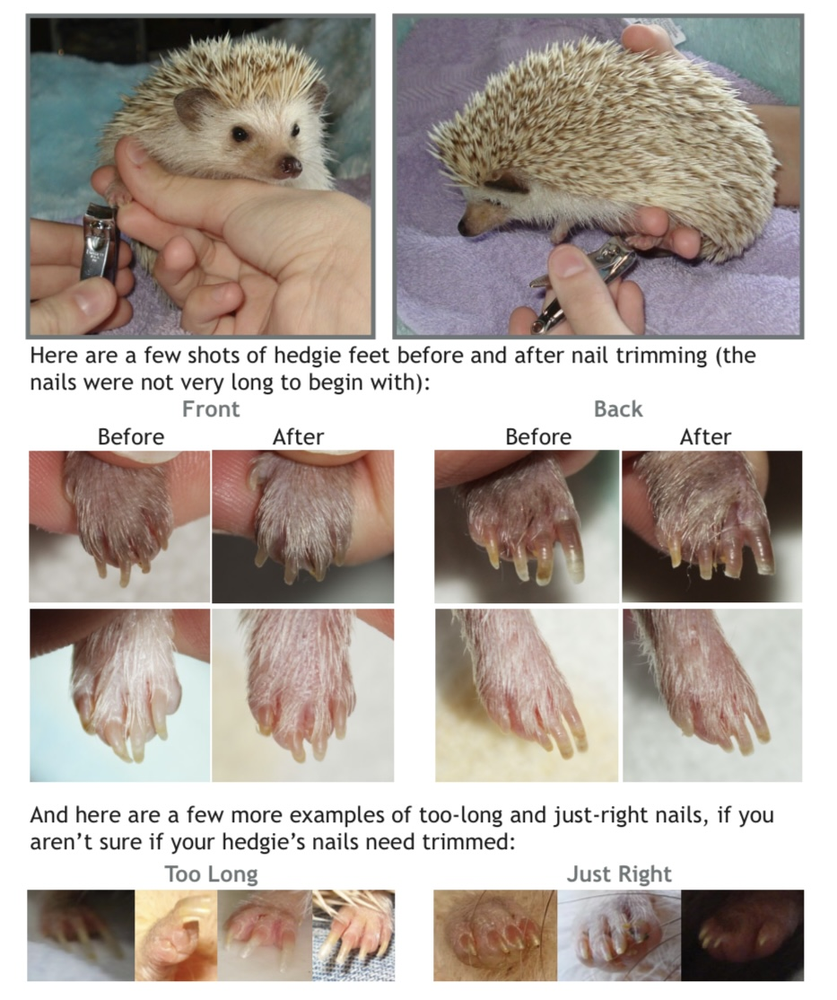
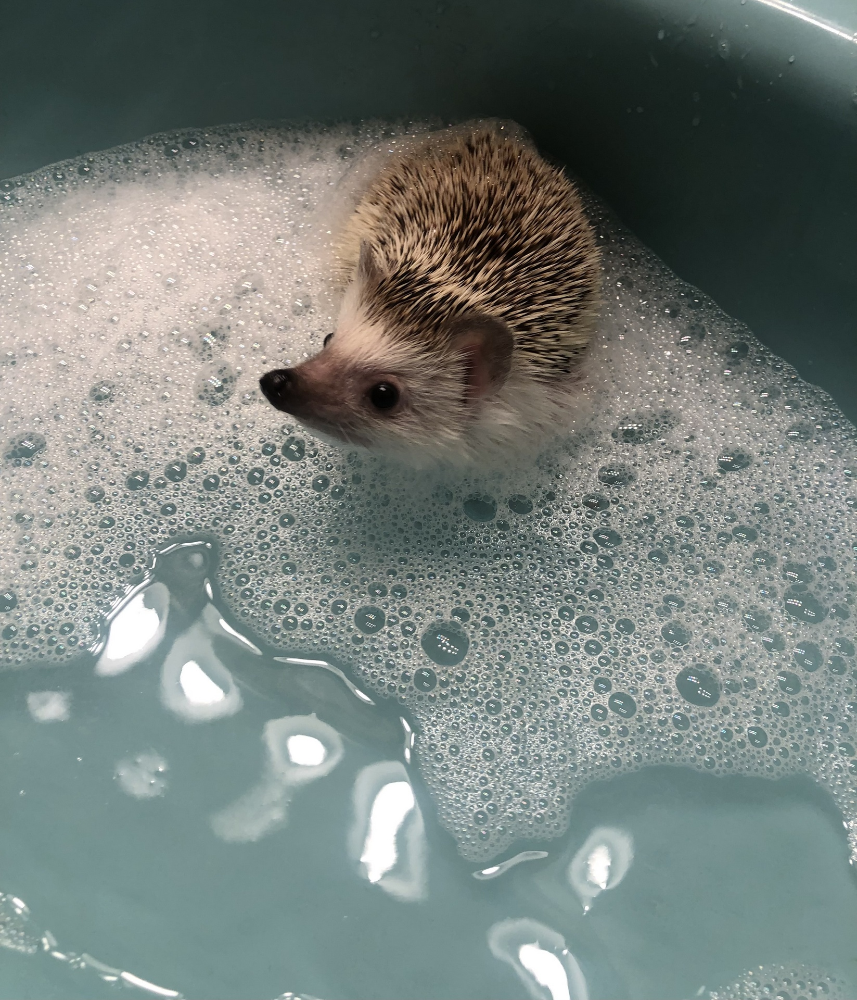
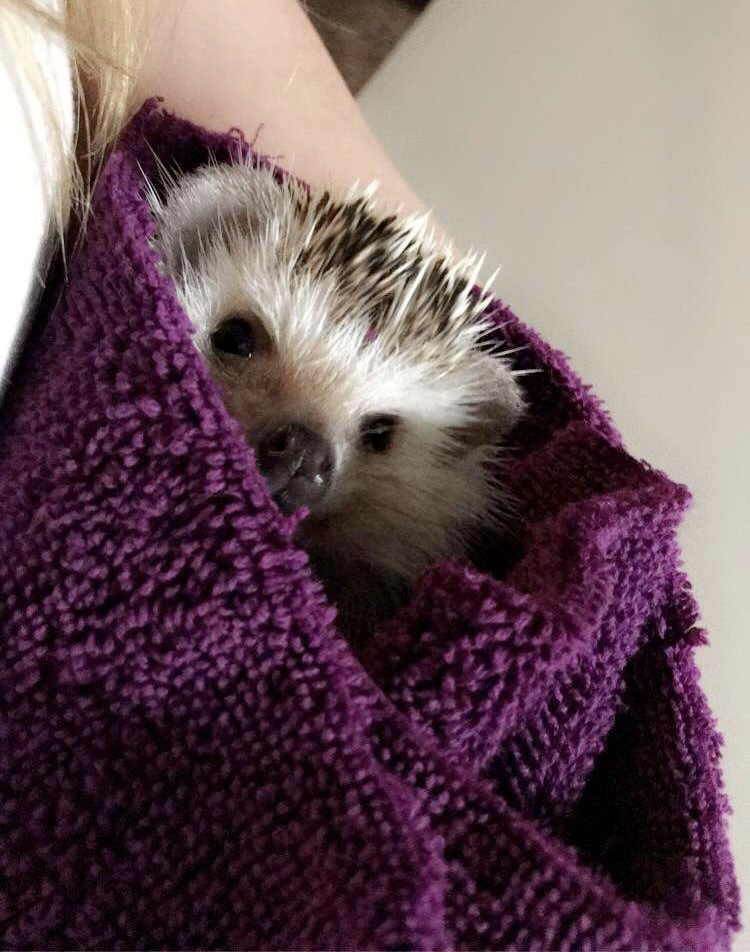
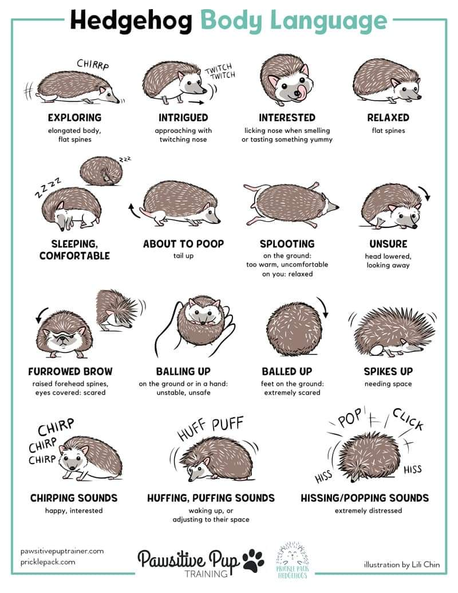
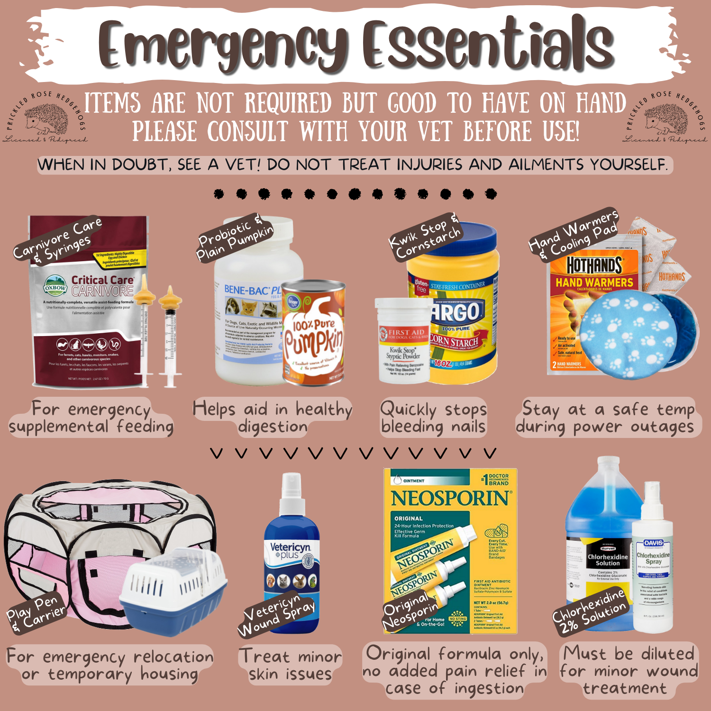

We raise hedgehogs with wonderful temperaments and beautiful coloring. We handle our hedgehogs daily, providing them with individual quality time. We feed them the best diet money can buy. It is important to us to raise the best hedgehogs possible, preparing them to be great pets. We put a lot of hard work and dedication into keeping our hedgehogs healthy and happy!
Every pet hedgehog purchase comes with a free disposable travel carrier, 2-week supply of food, care guide pamphlet, and breeder support for the lifetime of the animal.
We also offer hedgehog boarding services and education.
Please reach out to me with any questions or advice needed. We love hedgehogs and want them to have the best life possible. Even if you just want to send us cute pictures of them, send them away! :)
The African Pygmy Hedgehog, also known as the white-bellied hedgehog (Atelerix albiventris) can be found throughout most of central and eastern Africa. Their average lifespan is 3-5 years, but they can live up to 8 years with proper care and nutrition. As adults, they grow to around 5-8 inches long and weigh between 0.5-1.25 pounds.
Nocturnal: Party all night! Hedgehogs are a good pet for people who are busy during the day but are available to care for them in the evenings and/or early morning. Make sure you are happy to have a pet that is asleep during the day before you make the choice to bring one home.
Avid Runners Hedgehogs spend a lot of time running on their wheel. They can run up to 12 miles a night, making an exercise wheel a necessity. They require a wheel that is at least 12 inches in diameter. There is even a hedgehog running club for people who want to track how much their hedgehog runs! Run Hedgie Run.
Required temperatures Keeping a hedgehog warm is a matter of life or death! To prevent hedgehogs from attempting to hibernate, they need to stay warm at all times. They require temperatures between 73°-78°F (23°-25°C). If the temperature drops below 73 degrees it can be fatal. They will go into hibernation which will lead to death unless treated right away. Avoid this by using a heating system and thermometer to keep them warm. You will need a space heater or ceramic heat emitter to keep them warm. See list of required supplies.
Quills Hedgehogs are prickly balls of joy! Their quills are lightweight and strong. They are used as a way to protect themselves from predators. If they are frightened their quills will stand up–making them very pokey! When they feel safe their quills will lay flat on their back, creating a smooth surface.
At first, your hedgehog might have their quills up a lot, especially when picking them up from their cage. Once they recognize your smell and voice they will be comfortable around you and will put their quills down a lot more.
For some people with sensitive skin, the quills can cause small red bumps to form on their skin. Most of the time it will go away quickly. On some rare occasions it can cause itchiness. Make sure you are comfortable handling a hedgehog and touching their quills before choosing to have one as a pet.
Anointing If you notice your hedgehog foaming at the mouth and licking themselves with the foam, you may worry they are throwing up or sick. Your hedgehog is not throwing up all over themselves–they are “anointing.” Hedgehogs use the long tongue to “anoint” themselves with smells/tastes that are foreign to them. They are trying to camouflage themselves since they smell something unfamiliar. This is totally normal and nothing to worry about!
They poop a TON! It is always a bit shocking for people when they realize how much a hedgehog poops! They poop on their wheels while they are running, which means their wheels need to be cleaned daily and they often require foot baths to avoid “poop boots” from forming.
Hedgehogs are absolutely adorable animals. With proper care, they make wonderful pets! Like any exotic pet, they require special care and handling. While they are a great pet for many, this does not make them a good pet for everyone. Before making the choice to bring one into your home, make sure it is the right pet for you!
Things to Consider
Do you have the time to care for them?
First and foremost you should be sure you have enough time and space for a hedgehog. Hedgehogs are a good pet for people who are busy during the day but are available to care for them in the evenings (around 8 pm or later) and/or early morning).
Daily requirements: bonding (minimum of 30 minutes), food/insects and water, checking their cage temperature, wheel cleaning, and spot cleaning of their cage. Weekly they need to have their cage deep cleaned.
Are you prepared to take care of them for their whole lives?
The average Hedgehog lives anywhere between 3-6 years old. The average life span falls between 4-5 years old. Please make sure that you are prepared to and able to care for them for their whole lives. Hedgehogs bond with their humans. Rehoming is a stressful and traumatic experience for them. It can cause them to become stressed, prickly, easily scared, and anti-social.
Will you be moving in the next 3-6 years? If so, where?
Keep in mind that hedgehogs can’t travel abroad and are illegal in certain states. They will only be able to move with you if you are able to drive them and hedgehogs are legal in the state you are moving to. Hedgehogs are ILLEGAL in California, Georgia, Pennsylvania, Hawaii and areas in New York.
Do you travel a lot?
Hedgehogs can’t fly in planes and it’s not safe for them to fly in cargo. It is possible to safely transport a hedgehog in the car. Make sure you have someone to care for them while you are gone. I do offer boarding services ($10/day).
Are you prepared to pay for vet fees if something comes up?
As exotic pets, their vet fees can get expensive. Make sure you are able to pay for a vet visit before making the choice to take one home. If going to a vet is not something you want to do, a hedgehog is not the right pet for you. It is common for hedgehogs to develop health problems in their later years. While breeders try their best, it can never be guaranteed that they won’t have them. Before taking your hedgie home, consider: Do you have the money to pay for their medical bills and medications? Are you prepared and willing to take care of them if their health gets bad?
Your Other Pets:
If you have other pets, are you currently giving them the time and care that they require to thrive? Do you have time to add in another animal without neglecting one you already have? If you have other pets, are you able to keep them separated? Hedgehogs should not be around other pets, especially dogs and cats who can potentially harm them. The smell of dogs can be scary for a timid hedgehog. Hedgehogs are solitary animals and do not need or want other animals as companions.
Allergies:
Some people experience itching or a rash when coming in contact with quills. It is rare, but does happen. Anti-histamines are known to help while resistance to the quills is acquired. Besides skin sensitivity to quills in some people, there are no known allergies to hedgehogs, making them a good pet for someone who is allergic to other animals such as dogs and cats.
Note: We know unexpected things can happen. If you are no longer able to care for your pet, we ask that you return them to us. We do not offer refunds. We do not allow our hedgehogs to be re-sold.
Listed below are the bare necessities for owning a hedgehog. These are the minimum requirements for your hedgehog’s quality of life. Make sure to gather everything up before bringing your hedgie home!
Cage
The cage should be at least 4 square feet in size, the bigger the better.
Good cages that meet the size requirements:
MIDWEST Guinea Habitat Guinea Pig Home, Plus
Jumbo AmazonBasics Animal Cage
The cheapest option is to use a Sterilite plastic storage bin (110 qt recommended).
Sterilite 110qt Clear View Storage Bin With Latch Purple : Target
Alternatively, you can make your own CC cage for them. Just make sure that they are large enough. At Least 2 feet by 3 feet, larger is always better.
Some links to get you started:
How to Build a C&C Guinea Pig Cage: DIY Guide - PetHelpful
DIY Guinea Pig C&C Cage | How to Build a C&C Cage!
Wheel
Hedgehogs require a wheel that is at least 12 inches in diameter.
This is a good and affordable wheel. The only con is that it does make noise.
KAYTEE Comfort Animal Exercise Wheel (make sure to get the giant wheel)
If you want a silent wheel, a bucket wheel is your best option.
Carolina Storm Bucket Wheel
Sonoran Desert Hedgehogs Bucket Wheel
Henry's Hedgehog Bucket Wheel
Heating System
Option A)
Digital temperature controller, lamp, and ceramic heat emitter. (All 3 Items are needed)
Clamp Lamp
FLUKER'S Ceramic Clamp Lamp, 8.5-in
Ceramic Heat Emitter
FLUKER'S Ceramic Reptile Heat Emitter, 100-watt - Chewy.com
Ceramic Reptile Heater Emitter
100-150W Ceramic Heat Emitter (CHE) bulb
Digital Temperature Controller
Inkbird ITC-308 Digital Temperature Controller Outlet Thermostat 2-Stage 1100W with Sensor Reptile Beer Brewing Kegs Fridge Cured Meat Breeding Growing: Amazon.com
Automatic Thermostat Controller
Option B)
Heat lamp with digital thermometer and clamp lamp. (Both Items are needed)
Heat lamp
Zacro Reptile Heat Lamp 100W with One Digital Thermometer, Infrared Ceramic Heating Non-light Lamps Emitter 110V (Black)
Clamp Lamp
FLUKER'S Ceramic Repta-Clamp Lamp with Switch, 5.5-in - Chewy.com
Flukers 27002 Repta-Clamp Lamp with Switch for Reptiles, 5.5-Inch
Bedding
We recommend fabric liners as the primary bedding in a cage. We use fleece liners and find that they work very well. You can also strategically place a litter box in their cage. We use paper towels under the wheel, many people like to use pelleted pine or hemp bedding.
You can make your own fleece liners, purchase some from Etsy, or use fleece blankets.
Fleece Cage Liners
Full Cheeks Small Pet Quilted Habitat Liner
Midwest Cage Fleece Liner
Reversible Fleece Cage Liners
Custom Fleece Cage Liners
Safe bedding: Fleece, pine pellets, aspen shavings, fibercore eco bedding (great for nesting and dig boxes), and kiln dried pine shavings.
Never use scented bedding or loose shavings, they cause respiratory issues. Pine shavings must be kiln dried to be safe. Never use cedar bedding—it is toxic.
Sleeping Place
Hedgehogs love to find comfortable places to cuddle up and sleep. It doesn’t matter if it’s a cheap DIY sleeping place or an expensive item from Etsy, any sleeping place is good!
Each of our hedgehogs are sent home with a free hedgie cuddle bag.
We typically have some handmade bags available (add link) for purchase.
Water bottle or water bowl
KAYTEE Stoneware Cavy Small Pet Bowl
Hedgehog Water Bottle
Hedgehog Quencher Bottle
Food bowl
Ceramic bowls are best.
LIVING WORLD Blue Ergonomic Small Pet Dish
Imagitarium Ceramic Terrarium Dish
Ceramic Hedgehog Bowl
Wheeky Pets STAYbowl Small Pet Tip-Proof Bowl
Nice to have:
Large Igloo –
KAYTEE Small Animal Igloo Hideout, Large
Toys
Mint Stick or Mint Stuffed Toy
Rubber ducky, crinkle balls, pom poms, and plastic balls.
They love toilet paper rolls (just make sure to cut down the middle so they don’t get stuck)!
Pom pom fleece toy: easy to make or you can purchase one
Additional cuddle spots
Dig Box: it is easy to make a dig box or you can purchase one on etsy
Mealworm/bugs bowl
Lee's Mealworm Dish
Additional Nice to Have Supplies (optional)
Pet carrier: We recommend using a hard-sided cat carrier.
Travel bags are another good option.
Play pen
Scale (it’s good to track their weight)
Aveeno unscented baby wash
Unscented baby wipes
Oatmeal (for oatmeal baths)
Nail clippers
Kaytee Small Animal Pro-Nail Trimmer
White vinegar (for laundry & cleaning)
Spray bottle (mix vinegar & water for cleaner)
Snuggle/bonding scarf: There are a lot of great options available on Etsy.
Bonding Pouch
Hedgehog Bonding Scarf
Infinity Hedgehog Scarf
Bonding Scarf
Snuggle/bonding hoodie (a lot of people will take an old hoodie and wear it backwards—putting their hedgehog in the hood)
Water filter (we use this one: Brita Water Filter)
We highly recommend that every hedgehog owner read Kimberly Goertzen’s Complete Hedgehog Care Guide.
For your convenience, we sell complete setups with everything you need for your new baby that can be collected when you pick up your pet. Just let us know ahead of time if you want us to have a setup ready for you and we can give you a price quote.
Hedgehogs are insectivores. In the wild, their diet consists of insects. In captivity, a healthy hedgehog diet consists of kibble–a mix of high protein cat kibble, Hedgehog Precision, or a mixture of both. While Hedgehog Precision is the best option for your pet, it is not the only option. Many people do a mix of multiple cat kibbles as the bulk of their hedgehog’s diet. It is important to make sure that your hedgehog is getting the correct mixture of protein, fat, and fiber in their diets. The recommended percentages are: less than 35% protein, less than 15% fat, and at least 2% fiber.
Ideal Nutritional Guidelines
Hedgehogs eat 1-3 tablespoons of kibble a day. Insects should be provided to them daily (at the least a few times a week). While hedgehogs love mealworms, keep in mind that they are not healthy for them. They should be given as a treat, not a diet staple. They are high in phosphorus and low in calcium. I add a calcium mix to the mealworm’s substrate to add balance. Insects can include black soldier larvae, crickets, dubia roaches, calci-worms, and grasshoppers. Never feed your hedgehog insects you caught yourself.
We feed our hedgehogs insects, 1 T of our Quills & Roses Hedgehog custom mix and 1 T Hedgehog Precision daily.
Quills & Roses Hedgehog Mix
If you are only going to feed your hedgehog a single brand, we recommend Hedgehog Precision kibble. It is the best possible food for them.
Recommended: Flaxseed oil a few times a week on top of their kibble.
Snacks: Bug blocks, cooked chicken (unseasoned), wet cat food, and insects.
*Hedgehogs are lactose intolerant, so do not feed your hedgehog milk or dairy.
List of Foods to Avoid: What Can’t Hedgehogs Eat? Dangerous and Toxic Foods List
Note: “Hedgehog food”(besides Hedgehog Precision) is not actually healthy for hedgehogs. It does not contain the necessary levels of protein, fat, and fiber. The best staple diet consists of either Hedgehog Precision or a mix of high-quality cat food.
When purchasing a hedgehog from us, a free sample bag of our Quills & Roses Hedgehog Mix will be provided, which will last approximately three weeks. When purchasing a Starter Setup from us, we will provide a larger 3 lb (3 months worth) sample bag of food for free. Each pound of food lasts approximately 1 month for the average hedgehog.
Water: We highly recommend using filtered water. A basic water filter is inexpensive and ensures they get water that is good for them. We use the Brita Water Filter.
Hedgehogs require temperatures between 73°-78°F (23°-25°C). They require a heating set up including a thermometer to keep them warm. Remember, if the temperature drops below 73 degrees it can be fatal. They will go into hibernation which will lead to death unless treated right away. See list of required supplies for links to correct heating setups.
Bonding with your hedgehog is very important! It can take time and patience, but is very rewarding. Hedgehogs need to have at least 30 minutes of handling time a day.
Hedgehog Bonding: Helpful Tips & Tricks - Heavenly Hedgies
Hedgehog Care: Bonding Tips & Tricks
Things to do to bond with your hedgie:
Many people will spend time with their hedgehogs while watching TV/movies, playing video/computer games, or reading a book. You can set them on your lap under a comfy blanket or in a cuddle sack on your lap.
Daily:
Bi-Weekly:
Weekly:
Annually:
As Needed:
Hedgehogs need to have their nails clipped once a week. Some can go every two weeks, but for most once a week is needed. You can use baby nail clippers or cat nail clippers.
It is recommended to cut nails after a bath or after soaking their feet for a few minutes to soften up the nail bed. We have found the most success holding them in a towel while clipping their nails.

Source: Pet African Hedgehogs A Complete Guide to Care by Kimberly Goertzen
Hedgehogs only need a bath once a month.
Giving your hedgehog a bath:
 
Foot Baths
Foot baths can be given multiple times a week as needed. Hedgehogs poop and pee while they are running on their wheels at night. This can create a “poop boot” on the soles of their feet.
Foot bath– Fill the sink up with about a half inch of warm water. Let them soak in the water for 5-10 minutes until the poop has come off or it is softened enough for you to wipe it off (you can use a piece of toilet paper or fabric).
Many hedgehogs are able to learn to be litter trained. Here is an article about how to litter train a hedgehog: How to Litter Train a Hedgehog - Heavenly Hedgies
Cleaning a wheel: You can let the wheel soak in the sink for 5-10 minutes and then wipe it out with unscented baby wipes.
Cleaning a cage: You can use a mixture of white vinegar and water to clean the cage. Spray it down and then wipe using unscented baby wipes and paper towels.
Laundry: Make sure to use unscented laundry detergent. You can add 1-2 cups of white vinegar to a load to help get rid of smells.

Actions and Meanings:
Sounds
Biting
Most of the time when a hedgehog bites they think that something smells good and want to eat it. That is why it’s important to make sure to wash your hands with soap before handling them. Usually they will lick you before they bite. If you notice them licking your finger, move them before they go in for the bite. Sometimes a hedgehog will bite when they feel scared or threatened.
Biting Tips
(Excerpt from Pet African Hedgehogs A Complete Guide to Care by Kimberly Goertzen)
“Quilling '' is when a hedgehog loses its baby quills and grows into its adult ones. It generally begins with a few quills falling out, and gradually more are lost as new quills grow in. Hedgehogs go through quilling multiple times in their lifetime. The most difficult and intense quilling they go through is the 9 week quilling, which starts at about 7-12 weeks old. It’s similar to a child teething. Your hedgehog will most likely be a bit grumpy during this time. Be patient and gentle during this phase of their development.
Some tips:
Going to the Vet
Health Concerns
Check out the Hedgehog Care Guide for information about dealing with common health problems.
Hedgehog Illnesses and Symptoms - Heavenly Hedgies
Emergency Essentials Kit
We recommend everyone puts together an emergency kit for their pet in case of emergencies:

Kimberly Goertzen’s Complete Hedgehog Care Guide